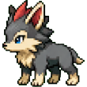

 Fire
Fire Electric
ElectricTap a stage to read its story.
Sparkbit is a grey-and-black wolf pup with a short spiky mohawk of black fur and bright amber eyes that arc tiny static sparks when it blinks in dry air. Its body is compact and low-slung, and it trots through the Sand Dunes leaving a trail of tiny singed-sand dots - static discharges with every step. It forms a small pack with any creature nearby, regardless of species, assigning itself the role of scout and then running so far ahead that it forgets what it was scouting for.
Field note: Sparkbit cannot stop producing static in dry dune air - it is permanently slightly on fire and completely unbothered by this.
Sand Dunes. Sparkbit and its family are found in the Sand Dunes. See everyone who lives there.
Share a Bond Food that matches its types to become friends. Sparkbit loves:
A Bond Food is not a trick. It joins your spirit with the Kimuro's spirit, and only when it chooses you.
Print the Kimuro adventure packs: mazes, cards, a board game and Bond Mark medals.
See the printable packs